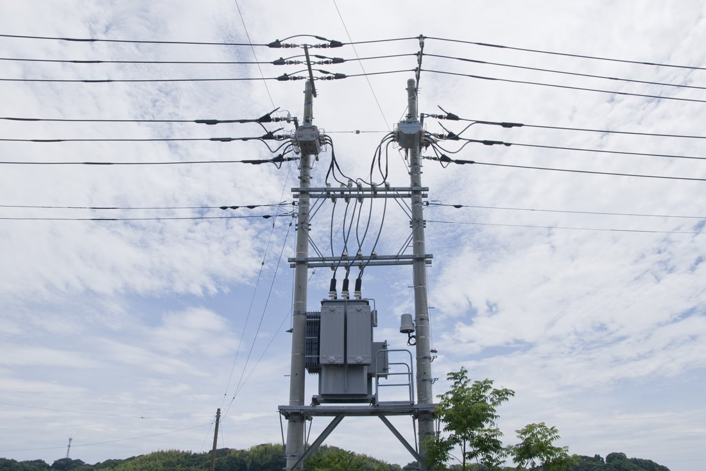
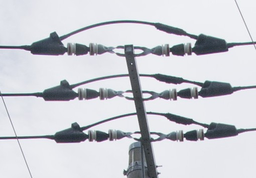
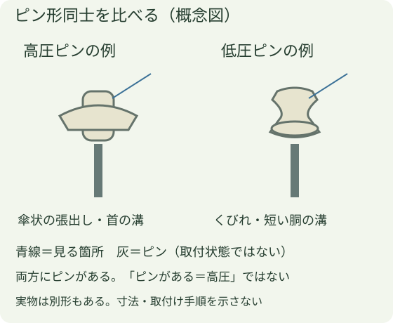
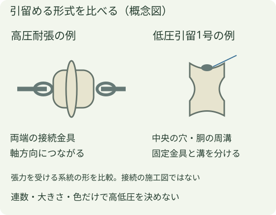
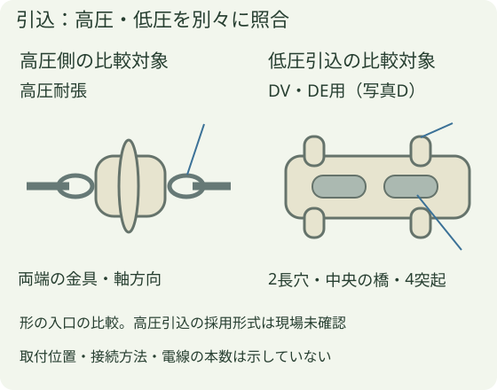

高圧・低圧の見分け方
実写：高圧系統の耐張形支持
茨城県潮来市の高圧配電SVRを写した例です。上部左柱の水平支持を拡大しています。磁器と両端金具が電線の向きに連なり、引留部のそばをジャンパ線が迂回します。メーカー写真の耐張形と構造を比較できますが、同メーカー・同型式という意味ではありません。


低圧側の実写は未確保：確認した兵庫・佐賀の写真は、個別の低圧ピン・引留・DV/DE用の形と接続先を確定できませんでした。以下の低圧図は補助の概念図で、実写との組比較が完成したものではありません。外観で充電状態や作業可否は判断しません。
現場の呼び方「端子」は、ここでは電線を支える「がいし」です。高圧用と低圧用の形式ごとの形を比べます。外観は設備種別を読む手掛かりであり、電圧・停電・作業可否を確定する方法ではありません。
1 ピン形：傘・溝・取付け相手を見る

電線を支える上部、首の溝、支持部材へつながる金属ピンを見ます。例では高圧側に傘状の張出し、低圧側にくびれがありますが、形の違う形式もあります。幹線の上部・下部という位置だけではなく、支持される線と形式を合わせます。
2 耐張・引留形：穴・金具・張力の向きを見る

高圧耐張の例は軸方向の両端金具、低圧引留1号の例は中央の穴と胴の周溝が見分ける入口です。取り付く相手と電線の張力を受ける系統を確認します。低圧引留三角・3号、耐塩形などは別形なので、この二形へ無理に当てはめません。
3 高圧引込・低圧引込を分けて読む

低圧引込の比較対象には、関西送配電規格のDV・DE線用引込がいし（メーカー写真D）があります。横長の本体、二つの長穴と中央の橋、周囲四つの突起を見ます。この具体形式の再利用可能な実写は未確保です。形状図は公式写真Dと照合した概念図です。高圧引込の現場採用形式も未確認で、前図の高圧耐張が必ず付くという説明にはしません。
4 例と違うとき
カバーで形が見えない、複数の形式がある、表示と外観が合わない場合は推測で決めません。電柱番号・対象位置・見えた形式を記録し、設備資料と照合します。接近・接触・操作の方法や離隔値はこの章では扱いません。
出典と機種・適用範囲
- カワソーテクセル：配電用がいし — 高圧ピン・耐張、低圧ピン・引留1号等の名称と実写真。
- 同：DV・DE線用引込がいし — 関西規格例は写真D。高圧引込一般の写真ではない。
- NGK：高圧耐張がいし — 配電線を支え、電柱と絶縁する役割。連結形もある。
2026年10月25日確認。メーカー図・写真は転載せず、会社写真と独自の模式図を使っています。
引留と引通は、電圧とは別の見方
引留：張力を受け止める
電線を端部などで留め、引く力を受ける支持関係です。がいしだけでなく、電線を留める金具とその先につながる電線まで見ます。
引通：経路を先へ通して支える
電線がその先へ続く途中の支持関係です。電線の通り道、溝や固定部、腕金との位置関係を見ます。
これは高圧・低圧と別の軸です。引込にも高圧・低圧があり、引留の役割を持つ部分があります。「引込だから低圧」「横向きだから高圧」とは決めません。名称だけでなく実際の接続関係を照合します。
低圧実写の確認範囲
兵庫・佐賀の候補写真では小型の支持部が写りますが、対象の電線を接続先まで追えず、低圧引留・引通の個別形式を確定できていません。高圧実写と並べる低圧の正解写真としては未採用です。必要なのは、がいし本体・留め金具・前後の電線・接続先を一緒に読める写真です。
カワソーテクセル：高圧用・低圧用の形式別公式写真と、DV/DE引込がいしの公式資料を形・支持関係の参照にします。公式写真は許諾未確認のため転載していません。